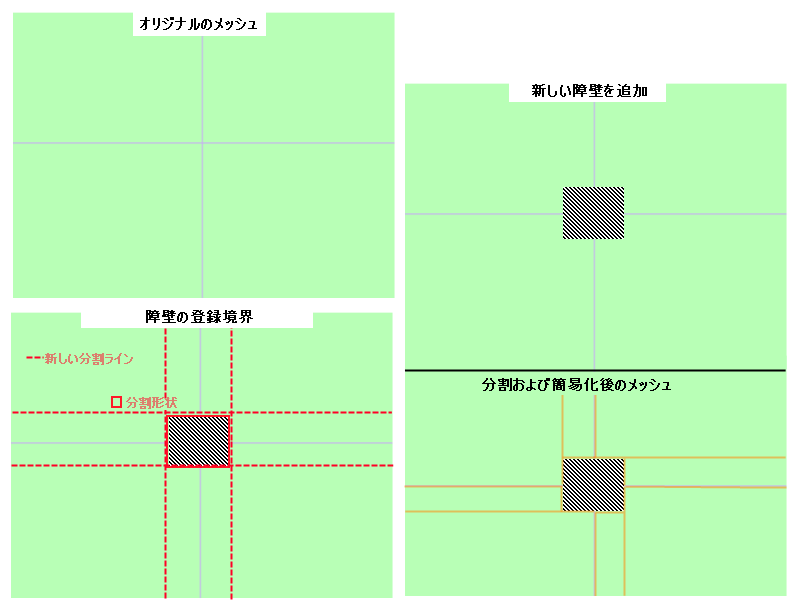
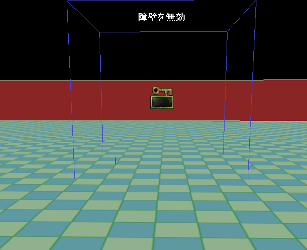
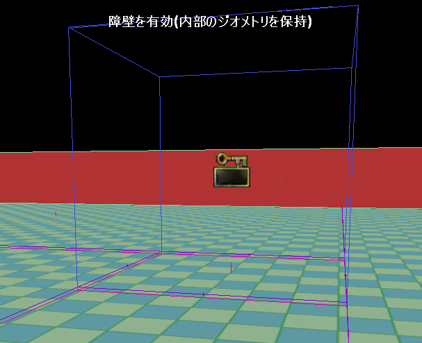
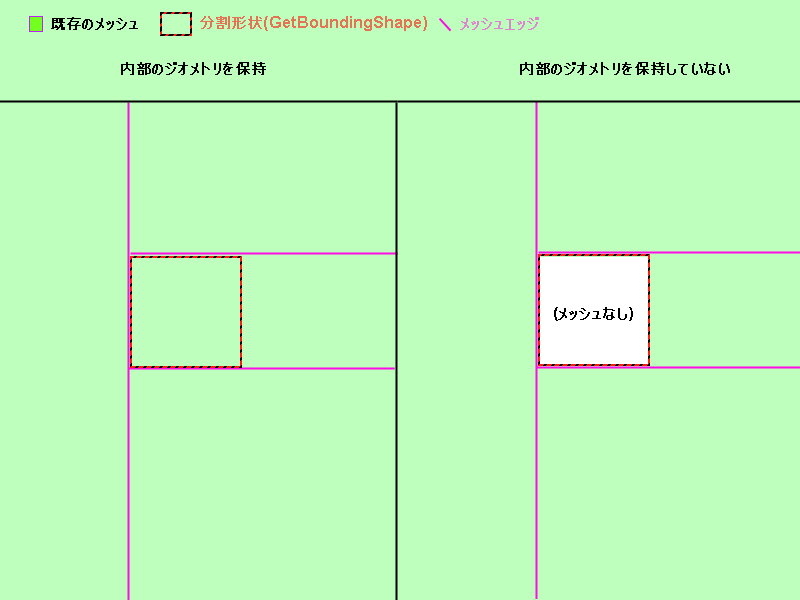
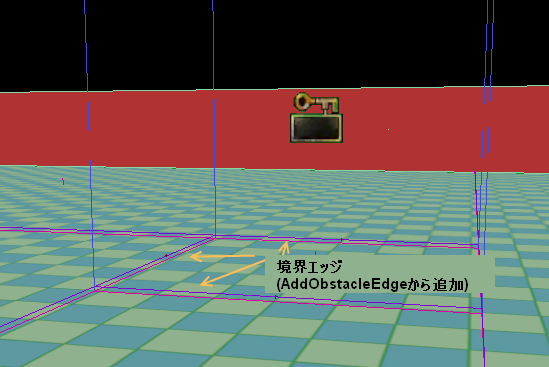

UDN
Search public documentation:
NavMeshDynamicObstacleSplittingJP
English Translation
中国翻译
한국어
Interested in the Unreal Engine?
Visit the Unreal Technology site.
Looking for jobs and company info?
Check out the Epic games site.
Questions about support via UDN?
Contact the UDN Staff
中国翻译
한국어
Interested in the Unreal Engine?
Visit the Unreal Technology site.
Looking for jobs and company info?
Check out the Epic games site.
Questions about support via UDN?
Contact the UDN Staff
障壁メッシュによるナビゲーションメッシュの動的な分割に関する技術的な概要
ドキュメントの概要: ナビゲーションメッシュに配備された動的なメッシュ分割システムに関する技術的な概要と、その使い方の説明。 ドキュメントの変更ログ: Matt Tonks により作成。概要
実行時の動的な変化に対応してメッシュ (および AI ナビゲーション) に影響を与えることができると、結構便利な場合がよくあります。このドキュメントでは、ナビゲーションメッシュ システムでこれがどのように行われるかについて概説します。ハイレベルの概要
基本的には、 Interface_navmeshpathobstacle とは、形状を指定し、その周囲のナビゲーションメッシュを分割するためのインターフェースをユーザーに提供するものです。ゲーム ワールドに新しい障壁 (obstacle) が登場し、AI がそのまわりを迂回しなければならない場合、ユーザーは RegisterObstacleWithNavMesh() を呼び出します。この関数は既存のメッシュ内のどのポリゴンがこの障壁の影響を受けるかを判定し、必要に応じてその形状のまわりのポリゴンを分割します。 次の画像を見てください。
デフォルトのメッシュは 4 つのポリゴンで構成され、キューブ形の障壁のまわりで細分割されています。これよりもっと複雑な障壁でも、軸から外れていても構いませんが、唯一の制約は、与える形状は凸状でなければならないという点です。 Hierarchy: (階層) 障壁まわりのメッシュが分割されるとき、実際には既存のポリゴンに代わる新しいメッシュを作成し、この方法によって一種の階層を形成します。これは、影響を受けたポリゴンを AI が使用するときに参照する階層です。中間 (または imposter) メッシュを含むポリゴンを通過するパスの検出時には、そのポリゴンのエッジをたどるのではなく、そのサブメッシュを調べてパスを見つけます。 Build on-demand: (オンデマンド作成) 障壁の影響下にあると印されたポリゴンを AI が通過する必要があるときに、障壁に沿ってポリゴンがまだ分割されていなければ、その時点でポリゴン分割が行われます。障壁の登録直後に行われるのではありません。それは障壁の登録コストを少しでも軽減するためで、例えば、ナビゲーションメッシュシステムへの登録と登録解除が頻繁に行われる障壁でも、このコスト高の処理は、障壁の影響下にあるメッシュのデータを AI が必要とするときだけ発生することになります。 さらに、ポリゴンを一度分割してしまえば、そのジオメトリの通過に関連する追加コストは発生しません。つまり、障壁の登録に伴う計算コストの負担は一度だけで、また、メッシュの親構造は変更されないので、障壁が消えたときに元の構造に戻るコストはほとんどかかりません。
詳細
非常に簡単なパス障壁の例として、NavMeshObstacle (NavMeshObstacle.uc) を調べてみましょう。
これには障壁の有効化/無効化に関する kismet ロジックが含まれていますが、興味があるのは以下の部分です。
cpptext
{
/**
* this function should populate out_polyshape with a list of verts which describe this object's
* convex bounding shape (この関数は、オブジェクトの凸形境界を表現する頂点のリストを out_polyshape に挿入する)
* @param out_PolyShape - output array which holds the vertex buffer for this obstacle's bounding polyshape (この障壁の境界ポリゴン形状の頂点バッファを格納する出力配列)
* @return TRUE if this object should block things right now (FALSE means this obstacle shouldn't affect the mesh) (このオブジェクトが現在ブロックする場合は True を返す。メッシュに影響しない場合は False)。
*/
virtual UBOOL GetBoundingShape(TArray<FVector>& out_PolyShape);
virtual UBOOL PreserveInternalPolys() { return TRUE; }
}
これは非常に基本的なパス障壁で、現在のところ、その振る舞いはこの障壁の形状に沿ってメッシュを分割するだけです。次に、このサンプルのパスオブジェクトが無効 (登録解除) 状態にあるスクリーンショットと、有効 (登録) 状態のスクリーンショットを見てみましょう。
(注意: 以下のスクリーンショットでは、PreserveInternalGeo() がオンになっています。これについては後ほど説明します)
次の図では、まだメッシュに登録されていない障壁がワールドにあります。このメッシュは大きなポリゴン 1 つで構成され、その内側に障害物が配置されています。

次は障壁が登録された後のメッシュで、メッシュは (実行時に) 分割されています。

このサンプルオブジェクトを定義する 2 つの関数に目を通してみましょう。 GetBoundingShape:
以下はこのオブジェクトの実装です。
UBOOL ANavMeshObstacle::GetBoundingShape(TArray<FVector>& out_PolyShape)
{
out_PolyShape.AddItem(Location + FRotationMatrix(Rotation).TransformFVector(FVector(200.f,200.f,0.f)));
out_PolyShape.AddItem(Location + FRotationMatrix(Rotation).TransformFVector(FVector(-200.f,200.f,0.f)));
out_PolyShape.AddItem(Location + FRotationMatrix(Rotation).TransformFVector(FVector(-200.f,-200.f,0.f)));
out_PolyShape.AddItem(Location + FRotationMatrix(Rotation).TransformFVector(FVector(200.f,-200.f,0.f)));
return TRUE;
}
ご覧のとおり、単純な四角形を提供しているだけです。この関数は、障壁の境界を表すポリゴンを提供するだけなのです。障害物が静的メッシュの場合は、そのメッシュの境界を使って上記と同じようなことをしても構いません。
ここで覚えてもらいたい大切なポイントは、この関数は、障壁が登録された後で、それを取り巻くメッシュが最初に分割されるときに一度だけ呼び出される、という点です。障壁が登録され、そのまわりのメッシュが分割されてしまうと、その障壁の登録を解除して再度登録しない限り、障壁はパス検出の対象から外れます。
ここでオーバーライドされる次の関数は非常に単純なものです。
PreserveInternalPolys: この関数は、分割プロセスに、障壁内部のジオメトリを同じ場所に保つように指示しているだけです。上図のスクリーンショットから分かるように、障壁の内側のジオメトリは維持され、残りのメッシュとリンクされています。
次図はこれを別の画像で示しています。

パス障壁に関する最後の大切な点は、障壁の内側のポリゴンと、外側のポリゴンの間に追加されるエッジのタイプを決定することができることです (内部ジオメトリを維持する障壁のみ)。障壁の内側のポリゴンと外側のポリゴンの間にリンク (エッジ) が作成されるときは常に、その障壁の AddObstacleEdge 関数が呼び出されます。

ユーザーはこれをオーバーライドして、障壁に適したタイプのエッジを追加することができます。デフォルトの動作は、通常のエッジを追加し、すべての AI に対してパス障壁の内側と外側の間を通過できると伝えるだけですが、パス障壁への出入り時にカスタムの動作を与えたいことがよくあります。そのような場合には、 inteface_navmeshpathobject も実装する可能性もあるでしょう。
Interface_NavMeshPathObject との連動
AddObstacleEdge のオーバーライドがよく行われるのは、 パスオブジェクト にリンクするエッジを追加するケースです。例えば、 interface_navmeshpathobstacle および interface_navmeshpathobject の両方を実装する障壁を作成することができます。 これが役に立つ理由を例を挙げて説明してみましょう。ここでは、レベルを開始してしばらくしてから、地面に油のたまりが散布された様子を思い浮かべてください。 油のたまりについては、以下が必要です。- 油たまりの形状に沿って静的ナビゲーションメッシュを分割し、AI がそこを避けて通れるような細かさにメッシュを加工する必要があります。
- 可能な限り AI が油のたまりを避けることができるように、たまりに入る際の追加コストを提供する手段が必要です。
- Interface_NavMeshPathObstacle::GetBoundingShape() を実装する
- 適当な時点で障壁を登録する
- AddObstacleEdge をオーバーライドし、通常のエッジではなく、油のたまりにリンクされる PathObject エッジを追加する
- Interface_NavMeshPathObject::CostFor() を実装する (パスオブジェクトのドキュメント を参照のこと)
AddObstacleEdge
AddObstacleEdge についてまだ詳細に説明していないので、ここでこの関数を詳しく調べてみましょう。
/**
* This function is called when an edge is going to be added connecting a polygon internal to this obstacle to another polygon which is not (この関数は、この障壁の内側のポリゴンを外側の別のポリゴンにリンクするエッジが追加されるときに呼び出される)
* Default behavior just a normal edge, override to add special costs or behavior (e.g. link a pathobject to the obstacle) (デフォルトの動作は通常のエッジで、それをオーバーライドして、例えばパスオブジェクトを障壁にリンクするなど、特別なコストまたは動作を追加する)
* @param Status - current status of edges (e.g. what still needs adding) (エッジの現在のステータス、例えばまだ何を追加する必要があるかなど)
* @param inV1 - vertex location of first vert in the edge (エッジの最初の頂点の位置)
* @param inV2 - vertex location of second vert in the edge (エッジの 2 番目の頂点の位置)
* @param ConnectedPolys - the polys this edge links (このエッジがリンクするポリゴン)
* @param bEdgesNeedToBeDynamic - whether or not added edges need to be dynamic (e.g. we're adding edges between meshes) (メッシュの間にエッジを追加する場合など、追加するエッジが動的である必要があるかどうか。)
* @param PolyAssocatedWithThisPO - the index into the connected polys array parmaeter which tells us which poly from that array is associated with this path object (リンクされるポリゴンの配列のインデックス。配列内のどのポリゴンが、このパスオブジェクトと関連付けられているかを示す)
* @return returns an enum describing what just happened (what actions did we take) - used to determien what accompanying actions need to be taken (何が起こったか、つまりどのようなアクションが行われたかを示す enum を返す。別の障壁および呼び出しコードが、どのアクションを続けて実行する必要があるかを判定するのに使う)
* by other obstacles and calling code
*/
virtual EEdgeHandlingStatus AddObstacleEdge( EEdgeHandlingStatus Status, const FVector& inV1, const FVector& inV2, TArray<FNavMeshPolyBase*>& ConnectedPolys, UBOOL bEdgesNeedToBeDynamic, INT PolyAssocatedWithThisPO);
メッシュが分割された後に、新しいポリゴンの周囲で動的分割 (Dynamic Splittery) コードが実行され、周囲のワールドとのリンクを試みます。リンク可能なポリゴンが見つかると、この関数を呼び出して提供されたエッジを渡し、パス障壁に適切な手段をとらせます。
この関数で注意しなければならないのは、まだ別の方向に追加するエッジがあるかどうかを伝えるために渡される、厄介な Status パラメータです。これが必要なのは、一方向に向かうエッジだけが欲しい状況もあるからです。例えば、AIs がパス障壁の外に出ると中に戻れなくするエッジがこのケースに該当します。
したがって、エッジを追加するときはその直前に何をしたかを返して、呼び出し側のコードがもう一方の方向にデフォルトエッジを追加する必要があるのかどうか判断できるようにする必要があるのです。さらに、相互に近接する 2 つのパス障壁の両方に、カスタムエッジを追加することもできます。
ここでデフォルトの実装を調べてみましょう。
EEdgeHandlingStatus IInterface_NavMeshPathObstacle::AddObstacleEdge( EEdgeHandlingStatus Status, const FVector& inV1, const FVector& inV2, TArray<FNavMeshPolyBase*>& ConnectedPolys, UBOOL bEdgesNeedToBeDynamic, INT PolyAssocatedWithThisPO)
{
return EHS_AddedNone;
}
ご覧のとおり、まだ何もしていない、ということを示しています。したがって、呼び出し側のコードは、次にポリゴンの間にデフォルトのエッジを追加しなければならない、ということが分かります。
今度は、パス障壁にリンクされるパスオブジェクトエッジの追加例を見て見ましょう。
EEdgeHandlingStatus UAIAvoidanceCylinderComponent::AddObstacleEdge( EEdgeHandlingStatus Status, const FVector& inV1, const FVector& inV2, TArray<FNavMeshPolyBase*>& ConnectedPolys, UBOOL bEdgesNeedToBeDynamic, INT PolyAssocatedWithThisPO)
{
// if an edge has already been added in the direction we want to add an edge then there is probably a conflicting pathobstacle (e.g. we're butted
// up against another obstacle which has already added an edge.. so just bail) (追加したい方向に既にエッジが追加されている場合、パス障壁の競合 (既にエッジを追加した別の障壁にぶつかっているなど) の可能性があるので抜ける)
if(Status == EHS_AddedBothDirs)
{
return Status;
}
// if there is already an edge point back into this PO from the other poly, bail (別のポリゴンからこのパスオブジェクトに戻ってくるエッジ点が既に存在する場合は抜ける)
if( (PolyAssocatedWithThisPO == 0 && Status == EHS_Added1to0) ||
(PolyAssocatedWithThisPO == 1 && Status == EHS_Added0to1) )
{
return Status;
}
TArray<FNavMeshPolyBase*> ReversedConnectedPolys=ConnectedPolys;
// so we want to add an edge back into the poly associated with this PO, so swap the order if we need to (このパスオブジェクトに関連するポリゴンに戻るエッジを追加する。必要に応じて順番を入れ替える)
if(PolyAssocatedWithThisPO == 0)
{
ReversedConnectedPolys.SwapItems(0,1);
}
UNavigationMeshBase* Mesh = ReversedConnectedPolys(0)->NavMesh;
if( Mesh == NULL )
{
return Status;
}
// Add the edge to the mesh (メッシュにエッジを追加する)
TArray<FNavMeshPathObjectEdge*> CreatedEdges;
Mesh->AddDynamicCrossPylonEdge<FNavMeshPathObjectEdge>(inV1,inV2,ReversedConnectedPolys,TRUE, &CreatedEdges);
// grab a reference to the edge, and bind it to this pathobject (エッジ参照を取得してこのパスオブジェクトにバインドする)
FNavMeshPathObjectEdge* NewEdge = (CreatedEdges.Num() > 0) ? CreatedEdges(0) : NULL;
checkSlowish(CreatedEdges.Num() <2);
if(NewEdge == NULL)
{
return Status;
}
// bind new edge to this avoidance vol (新しいエッジをこの回避ボリュームにバインドする)
if(NewEdge != NULL)
{
NewEdge->PathObject = GetOwner();
NewEdge->InternalPathObjectID = 0;
}
// indicate that we added an edge from dest poly to src poly (リンク先のポリゴンからリンク元のポリゴンに向かうエッジを追加したことを示す)
if(Status == EHS_AddedNone)
{
if(PolyAssocatedWithThisPO == 0)
{
return EHS_Added1to0;
}
else
{
return EHS_Added0to1;
}
}
else
{
// if we get here that means someone should have already added an edge in the opposite direction (ここに達した場合、誰かが既に反対方向のエッジを追加していることを意味する)
return EHS_AddedBothDirs;
}
}
これは、通常のエッジではなく、障壁にリンクする PathObject エッジを追加するのですが、ただし障壁の外側のポリゴンから内側のポリゴンに のみ リンクするエッジである、というケースです。そのため、ここで紹介するロジックのほとんどは、ポリゴンの順番が正しいかどうかの判定だけで、正しくない場合には順番を入れ替え、正しい方向にエッジが追加されるようにしています。